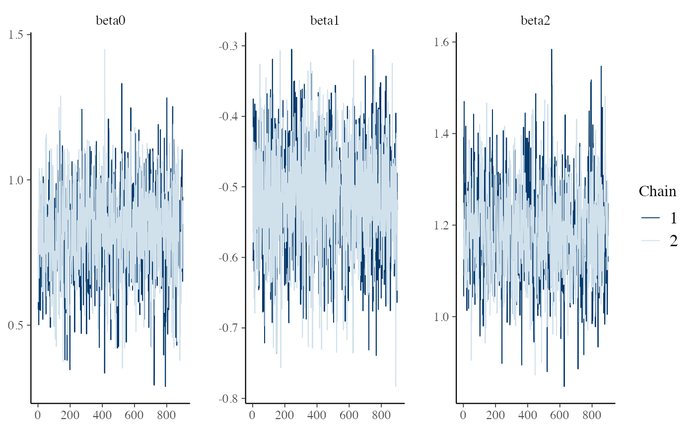
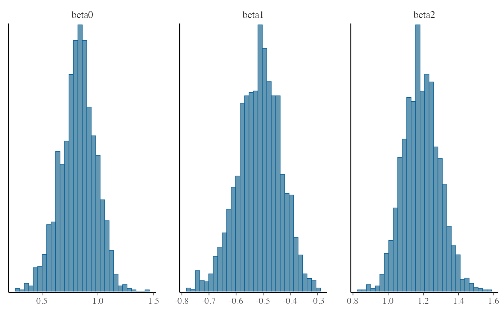
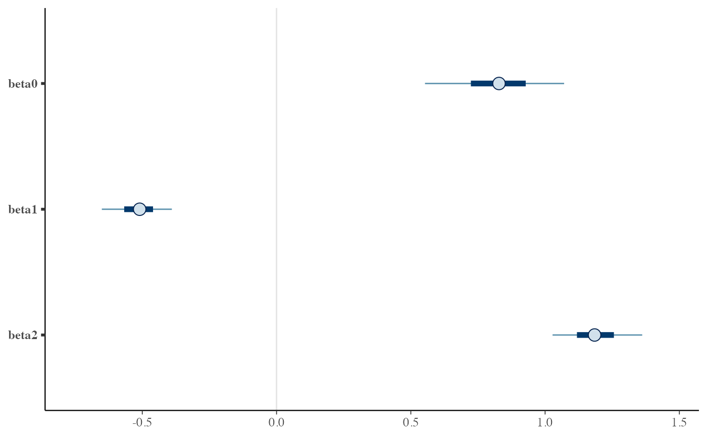
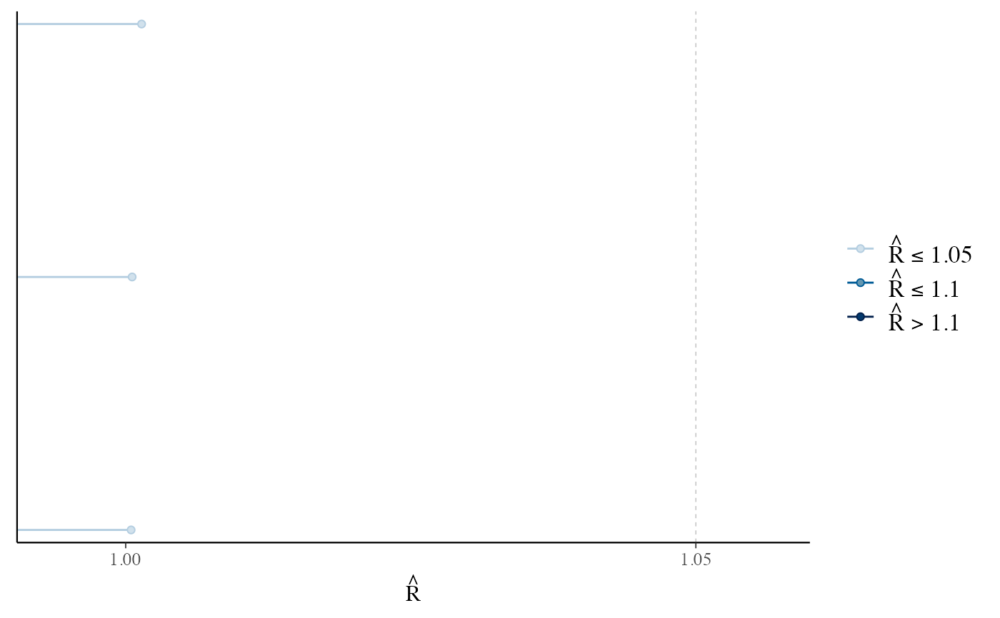

bayesplot packagehmclearn-plots.RdPlots of Rhat statistics, ratios of effective sample size to total sample size, and autocorrelation of MCMC draws.
mcmc_intervals(object, ...) # S3 method for hmclearn mcmc_intervals(object, burnin = NULL, ...) mcmc_areas(object, ...) # S3 method for hmclearn mcmc_areas(object, burnin = NULL, ...) mcmc_hist(object, ...) # S3 method for hmclearn mcmc_hist(object, burnin = NULL, ...) mcmc_hist_by_chain(object, ...) # S3 method for hmclearn mcmc_hist_by_chain(object, burnin = NULL, ...) mcmc_dens(object, ...) # S3 method for hmclearn mcmc_dens(object, burnin = NULL, ...) mcmc_scatter(object, ...) # S3 method for hmclearn mcmc_scatter(object, burnin = NULL, ...) mcmc_hex(object, ...) # S3 method for hmclearn mcmc_hex(object, burnin = NULL, ...) mcmc_pairs(object, ...) # S3 method for hmclearn mcmc_pairs(object, burnin = NULL, ...) mcmc_acf(object, ...) # S3 method for hmclearn mcmc_acf(object, burnin = NULL, ...) mcmc_acf_bar(object, ...) # S3 method for hmclearn mcmc_acf_bar(object, burnin = NULL, ...) mcmc_trace(object, ...) # S3 method for hmclearn mcmc_trace(object, burnin = NULL, ...) mcmc_rhat(object, ...) # S3 method for hmclearn mcmc_rhat(object, burnin = NULL, ...) mcmc_rhat_hist(object, ...) # S3 method for hmclearn mcmc_rhat_hist(object, burnin = NULL, ...) mcmc_neff(object, ...) # S3 method for hmclearn mcmc_neff(object, burnin = NULL, lagmax = NULL, ...) mcmc_neff_hist(object, ...) # S3 method for hmclearn mcmc_neff_hist(object, burnin = NULL, lagmax = NULL, ...) mcmc_neff_data(object, ...) # S3 method for hmclearn mcmc_neff_data(object, burnin = NULL, lagmax = NULL, ...) mcmc_violin(object, ...) # S3 method for hmclearn mcmc_violin(object, burnin = NULL, ...)
| object | an object of class |
|---|---|
| ... | optional additional arguments to pass to the |
| burnin | optional numeric parameter for the number of initial MCMC samples to omit from the summary |
| lagmax | maximum lag to extract for determining effective sample sizes |
These functions call various plotting functions from the bayesplot package, which returns a list including ggplot2 objects.
bayesplot package documentationDefault plot called by `plot` function. Histograms of posterior draws with all chains merged.
Kernel density plots of posterior draws with all chains merged.
Histograms of posterior draws with chains separated via faceting.
Kernel density plots of posterior draws with chains separated but overlaid on a single plot.
The density estimate of each chain is plotted as a violin with horizontal lines at notable quantiles.
Ridgeline kernel density plots of posterior draws with chains separated but overlaid on a single plot. In `mcmc_dens_overlay()` parameters appear in separate facets; in `mcmc_dens_chains()` they appear in the same panel and can overlap vertically.
Plots of uncertainty intervals computed from posterior draws with all chains merged.
Density plots computed from posterior draws with all chains merged, with uncertainty intervals shown as shaded areas under the curves.
Bivariate scatterplot of posterior draws. If using a very large number of posterior draws then `mcmc_hex()` may be preferable to avoid overplotting.
Hexagonal heatmap of 2-D bin counts. This plot is useful in cases where the posterior sample size is large enough that `mcmc_scatter()` suffers from overplotting.
A square plot matrix with univariate marginal distributions along the diagonal (as histograms or kernel density plots) and bivariate distributions off the diagonal (as scatterplots or hex heatmaps). For the off-diagonal plots, the default is to split the chains so that (roughly) half are displayed above the diagonal and half are below (all chains are always merged together for the plots along the diagonal). Other possibilities are available by setting the `condition` argument.
Rhat values as either points or a histogram. Values are colored using different shades (lighter is better). The chosen thresholds are somewhat arbitrary, but can be useful guidelines in practice. * _light_: below 1.05 (good) * _mid_: between 1.05 and 1.1 (ok) * _dark_: above 1.1 (too high)
Ratios of effective sample size to total sample size as either points or a histogram. Values are colored using different shades (lighter is better). The chosen thresholds are somewhat arbitrary, but can be useful guidelines in practice. * _light_: between 0.5 and 1 (high) * _mid_: between 0.1 and 0.5 (good) * _dark_: below 0.1 (low)
Grid of autocorrelation plots by chain and parameter. The `lags` argument gives the maximum number of lags at which to calculate the autocorrelation function. `mcmc_acf()` is a line plot whereas `mcmc_acf_bar()` is a barplot.
Gabry, Jonah and Mahr, Tristan (2019). bayesplot: Plotting for Bayesian Models. https://mc-stan.org/bayesplot
Gabry, J., Simpson, D., Vehtari, A., Betancourt, M., and Gelman, A (2019). Visualization in Bayesian Workflow. Journal of the Royal Statistical Society: Series A. Vol 182. Issue 2. p.389-402.
Gelman, A. and Rubin, D. (1992) Inference from Iterative Simulation Using Multiple Sequences. Statistical Science 7(4) 457-472.
Gelman, A., et. al. (2013) Bayesian Data Analysis. Chapman and Hall/CRC.
# poisson regression example set.seed(7363) X <- cbind(1, matrix(rnorm(40), ncol=2)) betavals <- c(0.8, -0.5, 1.1) lmu <- X %*% betavals y <- sapply(exp(lmu), FUN = rpois, n=1) f <- hmc(N = 1000, theta.init = rep(0, 3), epsilon = c(0.03, 0.02, 0.015), L = 10, logPOSTERIOR = poisson_posterior, glogPOSTERIOR = g_poisson_posterior, varnames = paste0("beta", 0:2), param = list(y=y, X=X), parallel=FALSE, chains=2) mcmc_trace(f, burnin=100)mcmc_hist(f, burnin=100)#>mcmc_intervals(f, burnin=100)mcmc_rhat(f, burnin=100)mcmc_violin(f, burnin=100)